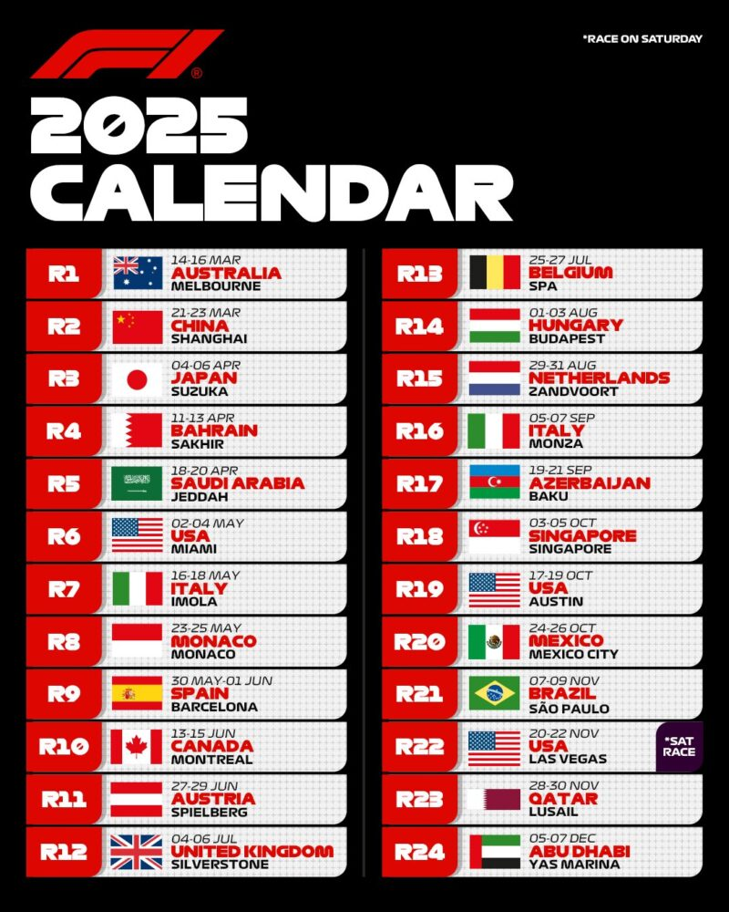

Tory i Kalendarz
Każdy tor ma swoją duszę – i swoją historię... Tory wyścigowe w Formule 1 to coś więcej niż tylko asfalt i zakręty. Każdy z nich ma własny charakter, wyzwania i historię. Spa-Francorchamps w Belgii słynie z dramatycznych warunków pogodowych i kultowego zakrętu Eau Rouge. Monako to tor uliczny, gdzie błąd nie wybacza – zamiast poboczy są betonowe ściany. Suzuka w Japonii oferuje wyjątkowy, techniczny układ w kształcie ósemki, gdzie nawet najmniejszy błąd kosztuje bardzo wiele. Z kolei nowe tory, jak Dżudda czy Las Vegas, wprowadzają świeżość i widowiskowość. Projektowane z myślą o telewizyjnych transmisjach i nowym pokoleniu kibiców, oferują ciekawe układy i stawiają przed zespołami zupełnie inne wyzwania. Niezależnie od lokalizacji – każdy tor to inny test umiejętności kierowcy i pracy zespołu. KALENDARZ FORMUŁY 1 NA ROK 2025
